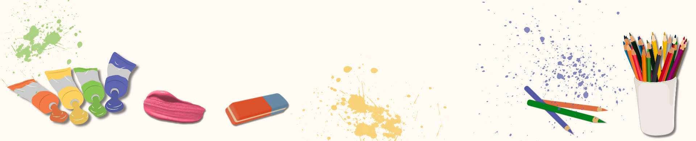

1. Create something using only one color.
2. Craft the same thing in 1 minute, 10 minutes, and 1 hour.
3. Use a theme from this website's inspiration board for a craft.
4. Make a spin wheel and create whatever it lands on.
5. Only use your non-dominant hand to create something.
6. Only use materials found in nature to create a craft.
7. Only use 3 random materials found in your house.
8. Paint something without using paintbrushes.
9. Switch artworks with a friend every 5 minutes until you both are done with the craft.
10. Create something based off of your favorite song.
